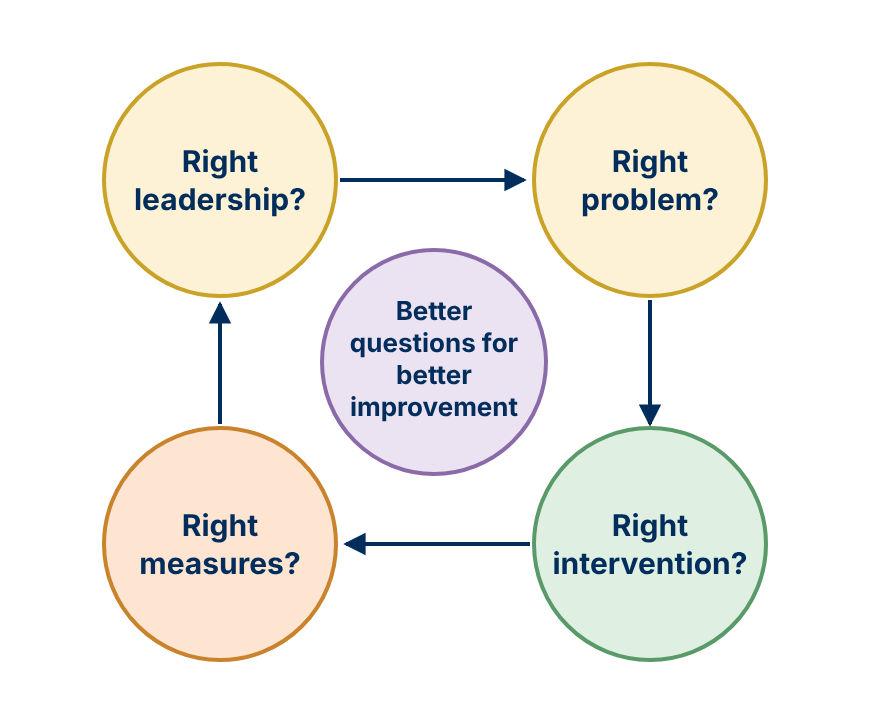

Why organisations fail to improve
Four questions to help you find the next useful step.

Start wherever you are most uncertain. Move between the questions as you learn; they are not a rigid sequence.
Why these four questions?
![Diagram: Why do organisations fail to improve? Four kinds of failure: make no improvements; choose the wrong improvements; fail to make improvements work; improve, but do not sustain it. These lead to four causes, each matched to a question: Right leadership? (we accept the way it is), Right problem? (we solve the wrong problem), Right intervention? (we make the wrong interventions) and Right measures? (we choose the wrong measures). All four lead to a common root: warnings about our purpose are explained away, because a comfortable explanation wins over an inconvenient truth. Other roots, such as real constraints, external shocks and lack of knowledge, become failures when not faced honestly. The response: help people tell whether a warning is real and important, and stop it being explained away.](assets/why-organisations-fail-to-improve.png)
What we mean by purpose: what the organisation exists to do and for whom—for a hospital, safe and effective care for its patients; for a business, serving its customers well and staying viable. A warning about our purpose is any sign that we may be falling short of it, such as harm, near-misses, complaints, rising delays or lost customers.
Start small. Learn. Repeat.
When improvement stalls, we may have accepted the current situation as “just the way it is”, misunderstood the problem, chosen an unsuitable or incomplete change, or misjudged the results.
You do not need a complete system map before beginning, but do need enough understanding of the relevant connections to act responsibly. Start with one important difficulty, consider its dependencies and wider effects, and use the result to improve your understanding.
One problem → one leverage point → one experiment → three measures → one decision
A leverage point is a condition where a change could make a useful difference. Treat it as a possibility to test—not a proven answer.
Explore the four questions
Select a question to find out more. Start with the one you are most uncertain about.
Throughout: What do we know, what are we assuming, and how could we check? And when the answer seems to be “we can’t”: if you had to, how would you?
Right leadership?
Do we refuse to accept “this is the way it is”, put harm first, and act fast?
- Question what has become normal. What have we got used to that a newcomer would question? Which workarounds have people built around a problem nobody fixes?
- Find out whether a warning is real. When a worrying number, alert or complaint arrives, check it another way before concluding “it’s the data”, “it’s a one-off” or “that always happens”. Recurring small problems are warnings too.
- Guard against complacency. “We’ve been fine” is not the same as “we are fine”. A good record is a reason to keep looking, not to stop.
- Keep the purpose in view. Are targets, ratings, funding, reorganisations or owners’ demands crowding out what we exist to do?
- Act, and close the loop. Put harm and loss first, act promptly, and make sure the people who raised a concern hear what happened.
Leave with: one warning examined—is it real, does it matter?—and a named decision about what to do.
Major failures rarely come out of the blue: the warning signs, and why they get explained away →
Leadership here means anyone who decides what happens next, not only senior managers. If we decide not to act, that should be a deliberate decision: who decided, on what evidence, and when will we look again? Drifting back to business as usual is not a decision.
Help me lead and sustain improvement
Use these clues to check whether leadership is helping improvement or quietly holding it back. They are prompts for discussion, not a scorecard.
Keep the purpose in view
Organisations rarely abandon their purpose deliberately. More often, other demands fill the agenda until the purpose gets less attention than the things that were meant to serve it. Watch for:
- Status, ratings and targets becoming the goal. A new status, an inspection rating or a headline target can absorb leadership attention while everyday care or service quietly declines. The public inquiry into Mid Staffordshire found a board focused on finance, targets and achieving foundation trust status while patients were neglected.
- Financial and owners’ demands. Pressure to cut costs, hit a quarterly figure, grow quickly, or buy or sell a product or business can be legitimate and necessary. The risk comes when nobody asks what the decision will do to safety, quality and the people we serve. At BP’s Texas City refinery, cost-cutting degraded equipment and training before a fatal explosion.
- Reorganisations, mergers and takeovers. They consume leadership time, move people and break the links that carried knowledge. Lessons are easily lost in the transition.
- Preparing for inspection instead of improving the work. Looking good to an assessor is not the same as being safe and effective.
- “We don’t have the resources or funds to solve that.” Sometimes true, but often a way of leaving a problem untouched without deciding to. Treat it as a design problem (see below), and if the answer really is no, decide it openly.
Questions to ask: What is this demand doing to the people we serve? Who is watching the purpose while we deal with it? If our purpose were the only measure, what would we do differently this month?
External demands are often real and cannot be ignored. The aim is not to refuse them, but to make their effect on the purpose visible before deciding.
Was it really unavoidable?
Real constraints, external shocks and gaps in knowledge do cause problems. They become lasting failures when they are not faced honestly—when they turn into reasons not to look. Before accepting “there was nothing we could do”, ask:
- Were there signs it was coming, and did we notice how the world around us was changing? New users, technologies, demand, funding or threats can create hazards our defences were not designed for. Shocks are rarely as sudden as they seem afterwards.
- Has this happened elsewhere, and did we look? Few failures are genuinely new; the lesson usually exists somewhere. “That couldn’t happen here” is often how it does. See two kinds of warning.
- Has someone actually decided this, with the cost of doing nothing counted? A genuine lack of money or skills should lead to a deliberate choice—prioritise, find a cheaper way, get help or accept the risk openly—not to the problem quietly becoming “the way it is”.
Look at the right things
- Avoid the complacency trap. Success is the most common cause of complacency. Successful organisations and countries have slipped back when they stopped looking.
- Focus on the real hazards, not the convenient measure. A good headline figure can hide a growing risk elsewhere, as when good personal-injury rates have hidden serious process-safety problems.
- Go and see. Reports show the version of events that reached the top. When did leaders last see the work, and the near-misses, for themselves? See going to the gemba.
- Watch for changes in the world, not just in our own system. Who is reviewing outside events, alerts and other organisations’ failures, and asking “could this occur here?”
Make it safe to tell the truth
- Be transparent and communicate well. Share what is going wrong as well as what is going right.
- Make it safe to speak up. Do people raise bad news early, and what happens to them when they do? A false alarm costs minutes; a missed warning can cost far more.
- Own the outcome. Ask “what did we do?” before “who did it?”
Act and follow through
- Close the loop. Does each concern lead to a decision, and does the person who raised it hear about it?
- Protect the defences under pressure. What have we deferred, cut or worked around to keep things running—and who decided it was safe?
- Treat “we can’t afford it” as a design problem. Choose the few problems that matter most, count what inaction already costs, look for low-cost changes, stop funding what does not work, and test small before scaling.
Sustain it
- Build it into the organisation. Good habits should live in roles, rules, routine reviews, measures and tests—not only in one enthusiastic person. Build it in: structure, measures and memory →
- Keep the memory. Write lessons down, share them, and tell the stories to new staff. Organisations forget when people move on.
- Keep going after success. Would our approach survive a change of leader, or a few good years?
The test of leadership is not only what happens while a leader is there, but what carries on after they leave.
Show that it has been done: find the bright spots →Look beyond compliance to prevention →
Worked example: refusing to accept corridor care as normal →
Right problem?
What is one important difficulty—and what might be producing it?
- Describe the gap. What should be happening, and what happens instead?
- Follow a real case. Where and when does progress become difficult? What does the next step depend on?
- Explore explanations. What conditions might explain it? What else could explain it?
- Check the evidence. What supports or contradicts each explanation? What would help us choose one promising place to begin?
- Look for earlier warnings. Was this seen before—here, as a near-miss or recurring small problem, or somewhere else in a similar form—and explained away? There are few genuinely new failures.
Leave with: one clearly described problem and one explanation worth testing.
A plausible explanation is not an established cause. Investigate conditions before blaming people. Act on immediate risks; serious or irreversible harm may require specialist investigation before a test.
Help me understand the problem
Open only what helps with your current uncertainty. These are prompts, not a checklist to complete.
Understand enough of the wider system: consider the shared purpose, necessary dependencies and possible consequences elsewhere or later. If these cannot be understood adequately for the risk involved, investigate further before committing. A small local change is not automatically safe.
Where might the difficulty lie?
Choose the area that sounds familiar. These prompts support investigation; they are not diagnoses to assume or a checklist to complete.
1. How work flowsDemand, interruptions, dependencies, capacity and competing priorities.
- Dependencies and constraints: what must happen before work can move forward? Waiting for information, approval, another team or an external service can limit progress. Improving another step may not increase overall output now, though it may have other benefits. Does work depend on the boss making every sale or one expert having all the answers? Would it continue reliably if that person were unavailable—or demand doubled?
Explore constraints and bottlenecks → - Variation, demand and capacity: uneven arrivals, different types of work and changing capacity can create queues—even when averages appear balanced. Does the service have the capacity and flexibility to cope?
Explore variation, demand and capacity → - No capacity to improve: urgent work, rework and competing priorities can crowd out learning. Is recurring firefighting consuming the time needed to change the conditions producing it?
Make room to improve →
Protect time to test and develop alternatives → - Unhelpful boundaries: work is exposed to uncontrolled interruptions and changing demands. Useful boundaries protect focus without hiding dependencies or blocking cooperation.
- Avoidable work and failure demand: are chasing, corrections and repeat contacts consuming time, especially expert time? Investigate the earlier failure that generated the work. Necessary customer conversations, new needs and urgent safety concerns are not automatically failure demand.
Recognise and reduce failure demand → - Too many commitments, too little focus: are competing projects and requests preventing completion? Agree what should stop, wait or be renegotiated, rather than treating everything as a priority.
Choose priorities and protect focus →
2. How work is organised and supportedRoles, skills, cooperation, feedback, standards and assurance.
- Committing before testing the wider need: have we treated a few keen users’ requests as evidence that enough others need the same solution and will adopt or pay for it? Check who needs it, who decides, what alternatives exist and what evidence would justify further investment. For a public or internal service, test likely use, value and funding rather than assuming a commercial market.
Test the need beyond the first users → - Slow or incomplete feedback: people may not learn what happened after their decisions, or the information arrives too late to help. Do consequences reach the people who can act—including effects on customers and other teams?
Close the feedback loop → - Silos and local optimisation: teams can meet their own targets while shifting waiting, cost or risk elsewhere. Follow the work across boundaries and ask whether a local improvement helps the whole result.
Explore systems thinking and silos → - Missing standards: no clear, shared way to do routine work or handle exceptions.
- Unclear roles, authority or missing capabilities: does “quicker to do it myself” keep decisions with one person? Check expectations, skills, support and decision rights. Bring customer understanding and technical expertise together, rather than leaving them in separate silos. Capabilities may include market assessment, customer research, financial planning and technical skills.
Review roles and working arrangements → - Compliance replacing prevention: have documentation and audit results become substitutes for checking reliable delivery and actual outcomes? Meet applicable requirements, but also check what happens in everyday work.
Look beyond compliance to prevention →
3. Beliefs and assumptions shaping decisionsWhat feels necessary, impossible, too risky—or safe enough not to question.
Use familiar statements as starting points for questions—not labels for people.
- “If these users want it, there must be a market.” Are they representative of a reachable group—or unusually motivated users with different needs, budgets or support? What would show that others will commit, not just express interest?
- “We cannot afford to turn work away.” Are we accepting commitments we cannot deliver reliably? What do the cash position, sales pipeline and cost of servicing the work actually show?
- “We don’t have the resources or funds to solve that.” Is that a decision someone has made, with the cost of doing nothing counted—or a reason not to look? Could a smaller, cheaper change, or a different use of existing resources, make a start?
- “It will never happen to us.” What evidence supports that confidence? Are near-misses, changing conditions or concerns being overlooked?
- “This is the only market or product we know.” Have alternatives been investigated—or ruled out because they are unfamiliar? Who outside the organisation could help test our assumptions?
Too busy to investigate alternatives? Agree what will stop or change to create a small amount of protected learning capacity. Give someone responsibility for testing one adjacent opportunity with prospective customers before committing substantial development effort. The key is not to escape the current business in one leap. It is to stop the current business consuming every opportunity to discover what could come next.
- “It is quicker or safer to keep doing it ourselves.” What would make delegation or another way of working feasible? What knowledge, capability or authority is genuinely missing?
A possible loop—not a diagnosis: “We must take every job” → too many different commitments → overloaded key people → little time to develop alternatives → continued dependence on taking every job. Is this happening here, and what evidence would help us check?
Fear of running out of money may reflect a real financial constraint, not a mistaken belief. Staying in an existing market may be sensible. Missing capabilities need practical support, not simply a change of attitude.
What are we treating as a fact, what are we assuming, and how could we safely find out?
Does a familiar response keep leaving the problem in place? Explore common improvement traps →
What are system conditions?
System conditions are the structural and environmental factors that shape behaviour and how a system performs. Five useful categories are:
- Measures: the targets, metrics and rewards that influence behaviour.
- Tools & technology: the IT systems, equipment and information available to do the work.
- Structure & roles: the hierarchy, functional silos and division of responsibilities.
- Processes & rules: the workflows, policies and regulations governing how work moves.
- Culture & leadership: management behaviour and the unspoken norms that shape the working environment.
These conditions strongly influence how people behave and what they can achieve. Lasting improvement often requires changing the conditions—not simply asking people to try harder.
Also check capacity and capability: the time, staffing, skills, resources and authority needed to do the work.
Look beneath the latest event: patterns and the iceberg
The iceberg model helps us look beneath the visible event or occurrence. Consider this illustrative example:
- Event: a customer’s order arrives late.
- Pattern: late deliveries recur near the end of each month.
- Structure: sales promises dates without checking capacity; orders pile up before the monthly target deadline.
- Mindset or belief: “We must promise the date the customer wants, or we’ll lose the sale.”
Is this a one-off—or has it happened, or nearly happened, before?
Patterns include trends, cycles and recurring issues. Make them visible by charting what happens over time. Then investigate how work is organised and question the assumptions behind it. Include outside influences, such as changing demand, funding or other services. In a real investigation, the explanation needs checking—not assuming.
Look beneath the visible symptoms →Sketch what has been happening over time →
Choose another perspective if useful
- Organise and check causes with evidence — build a branching explanation; do not force one root cause.
- Where does it work better—and what is different? — compare the conditions before copying a practice.
- Apply the questions to patient-safety learning — use PSIRF to connect incident learning, a workable response and evaluation.
- Could a familiar improvement trap be involved? — use the examples as questions, not diagnoses.
Work backwards from the result needed: if we were designing afresh, what would have to be different? Compare this with current conditions, then check which differences actually matter. A gap from an ideal does not prove a cause.
Right intervention?
What is one bounded change that could help—or help us find out?
- Explain the connection. How should this step affect the difficulty? What should change first?
- Make it executable. Can the people involved carry it out? What must stop, wait or receive cover?
- Check dependencies and harm. What else must be in place? Who needs to cooperate or authorise it, and could it make things worse elsewhere?
- Limit the test. Where and for how long will it apply? How can we stop or adapt it?
- Make it robust. Would it still work with a new, tired or inexperienced person on their worst day? Prefer changes that remove or design out the problem over reminders and training alone.
Leave with: one experiment, an owner and a review date.
The next step might be an observation, comparison or conversation—not an operational change. Choose the smallest test capable of answering the question, not the smallest activity available. Some tests need coordinated action across teams. Set a deadline and a decision point; do not let a pilot drift indefinitely.
Help me design a workable change
Use this guidance when the proposed change needs a closer look. A deeper intervention is not automatically better; choose a change connected to a supported explanation.
Urgency has two tracks: contain the immediate consequences and investigate what keeps producing them. Restoring service is necessary, but does not establish that the recurring problem has been solved. A focused, time-bounded test can support prompt decisions; high-risk or tightly coupled changes may require a larger coordinated response and formal review.
Did we choose a level of intervention—or leverage point—that addresses those causes? Are we changing something that can make a difference?
- Level 1 — Fix the output: put the immediate problem right.
- Level 2 — Fix the process: improve how the work is done.
- Level 3 — Fix the system: change capacity, responsibilities, rules or working arrangements.
- Level 3 Deep — Reconsider beliefs and mindsets: question the assumptions holding the current system in place.
Design before reminders. Changes that remove the route to error, or make a problem show itself, keep working when people are busy, new or distracted. Training, reminders and “be more careful” fade as people change; use them alongside a stronger change, not instead of one.
Where will the problem move? Every change has side effects, good and bad. Ask what people will do instead, and where risk, work or delay might shift. A side effect that is seen and accepted openly is a decision; one that is unseen is the next problem.
Will this change be enough? Check what else must be in place for it to help.
Check what else is needed →
Immediate fixes can be necessary. Deeper changes can be more politically and organisationally difficult because they challenge established responsibilities, interests and ways of working.
What can we change ourselves? Identify what needs cooperation or authority from elsewhere. Do not ignore a cause simply because it sits outside our control.
Involve the people doing the work in understanding the problem and designing the change—not just informing them afterwards.
Make the new way of working clear, simple and practical, with the time, resources and authority to use it.
Protect capacity to respond. If every available hour is committed, unexpected demand, longer jobs or rework can quickly create queues. Slack is not automatically waste: it helps absorb variation and recover from disruption.
Why keeping everyone busy can slow the system down
With variable arrivals and processing times, waiting can rise sharply as utilisation approaches full capacity. Around 80% utilisation can be a useful planning prompt, but there is no universal threshold or requirement for 20% slack everywhere.
Keep a deliberate margin where and when it is needed, with the right skills. Check waiting, completed work, quality, safety and staff workload—not utilisation alone.
Design capacity and slack for the work →Recognise psychological inertia—the pull of familiar habits and assumptions. Listen to concerns: people may also see real risks, extra workload or something they stand to lose. Do not assume every concern is resistance.
Understand what makes the change difficult. Involve those affected, address risks and losses, and agree what will stop or be covered so the change is workable—not simply additional work.
Practical help to make change workable →
Then check: did the intended change actually happen in everyday work?
Choose a fix deep enough to address the problem →Meet apparently conflicting needs through separation →
Right measures?
What should we observe, and what will we decide?
Start with three measurement questions:
- Response: is the part we intended to change responding? Agree what should change first and when.
- Outcome: is the result that matters improving?
- Harm: are we making anything else worse—or shifting work, delay or risk to someone else?
Also check that the intervention was actually used. Adoption alone is not improvement. Record your prediction before the test; do not redefine success afterwards.
Leave with: a prediction, a few measures and a review at which to decide whether to continue, adapt, stop or scale.
Bring the results to the people who can decide what to do next; this is where measures feed back into leadership. Three is a useful starting point, not a limit when risk requires more. Allow for variation and realistic delays. A chart can reveal change; it does not establish its cause. No detected change does not automatically mean no benefit. Scale only when evidence supports wider use.
See the GP appointments analysis for an example of why recorded activity and patient access need different measures.
See the UK GDP analysis for an example of why total output, growth and people’s wellbeing need different measures.
See the dementia diagnosis analysis for an example of why a coverage target is not a measure of care.
Help me judge the result fairly
Agree beforehand what you expect to change, roughly by how much and when. Use the results to question that expectation and decide what to check next.
Follow the work to the next useful result. A shorter meeting is not an improvement if people then spend longer chasing missing information. Check whether the next person can act—and whether total effort or delay has fallen, rather than moved elsewhere.
Allow for variation. Nearly everything varies over time, making it hard to see the wood for the trees. Use run charts and, where suitable, step-change analysis to look for changes beyond routine—or common-cause—variation. Do not judge success or failure from a single result. The method must suit the data, including seasonal patterns and links between successive observations.
Is the change real? Before claiming an improvement—or explaining a worrying change away—check whether it is a genuine shift rather than routine variation, and look at it another way where you can.
Does one number hide another? A total can stay steady while one group gets worse, and a count can rise simply because more people are involved. Look at subgroups, and at rates as well as counts, where it matters.
Allow sufficient time—it may take several years. Agree realistic timescales for implementation, effects and detection. While waiting, check expected earlier results and possible harm.
A chart reveals patterns, not their causes. No detected change does not automatically mean no benefit.
Choose measures that show whether the change helped →Understand variation before reacting to a result →
Analyse your measure with the StepChange Analyzer →
Interpret your StepChange chart →
Worked example: evaluating corridor-care improvement →
One difficulty. One useful next step.
Bring one real difficulty. Choose the question you are most uncertain about and involve the people who can help.
Investigate enough to choose a responsible next step—not until every uncertainty has disappeared. Give that step an owner, a deadline and a clear question to answer.
The next step might be an observation, a conversation or a bounded change. Use what you learn to decide what to do next. Avoid both extremes: acting without thinking, and thinking without acting.
Write down what you learned and share it, so the lesson outlasts the people who learned it.
Keep the whole purpose in view. Understand the relevant connections. Limit commitment while uncertainty remains. Expand investigation or coordinate wider action when the evidence, risk or dependencies require it.